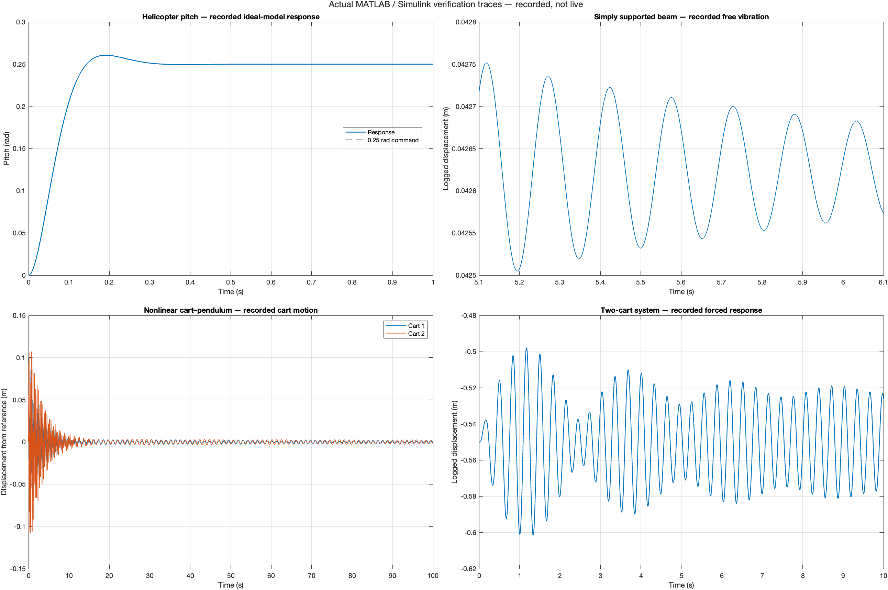

01 / ENGINE CONTROLA control loop
A control loop
you can feel.
Bring a simulated jet engine to life. Move the throttle, watch the spool respond, and explore the logic that keeps the system inside its limits.
I’m Emre. I build control systems, embedded software and computer vision tools — and make the thinking behind them visible.
↓Southampton, UK
BEng · Class of 2027
Engineering portfolio
Bring a simulated jet engine to life. Move the throttle, watch the spool respond, and explore the logic that keeps the system inside its limits.
A native CSRT tracker with an asynchronous vision pipeline. Built to keep the interface responsive while the tracking work happens.
Custom visual markers become steering commands. RoverD connects image processing on a Raspberry Pi to motor-control firmware on a Pico.
Change an input. Inspect the response.
Small browser companions to the source projects.
Mix forward and turn commands into left and right wheel outputs. Interrupt the link to see the 100 ms watchdog stop both outputs.
Browser model of the extracted C++ core. No hardware connection or vehicle-motion simulation.
Inspect the C++ source ↗Acceleration 0.75 / s · Deceleration 1.5 / s · Reversal passes through zero
Edit the puzzle, then let constraint checking and minimum-remaining-values search find a solution.
A JavaScript companion to the C++ solver. Empty cells accept digits 1–9; conflicting or impossible boards are rejected.
Inspect the C++ source ↗A starting puzzle is ready. Make it your own.
Toggle the binary input and follow it through a 4–8–16 sigmoid network. These are the weights trained by the C++ implementation.
16/16 training patterns decoded correctly. Bars show sigmoid activations, not probabilities. Browser inference matches the exported C++ outputs.
Inspect the C++ source ↗Loading trained weights…
Recorded MATLAB and Simulink results.
Reproducible models, with their limits documented.

Six mechanical-control studies and a turbojet speed controller. The prepared source retains original parameters and reports current reproduction results, including differences from historical figures.
Models, traces & verification ↗15 projects · 10 source packages
Explore the methods, evidence and code.
15 projects
I’m Emre Karausta, an Electrical and Electronic Engineering student at the University of Southampton, graduating in 2027.
My projects connect the physical world to software: sensing a target, modelling a response, designing a controller, and making the result understandable.
This collection brings together university work and independent builds. Each project includes the source and verification notes, with shared work and teaching contributions credited.